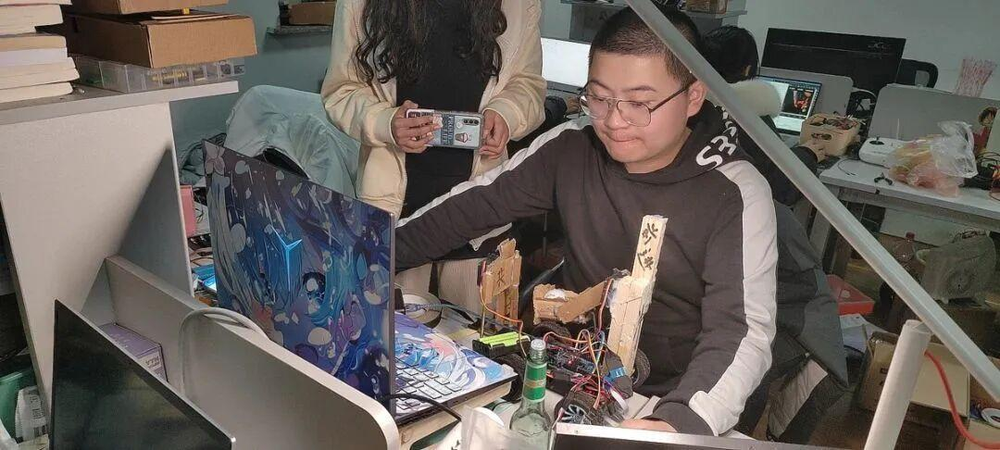
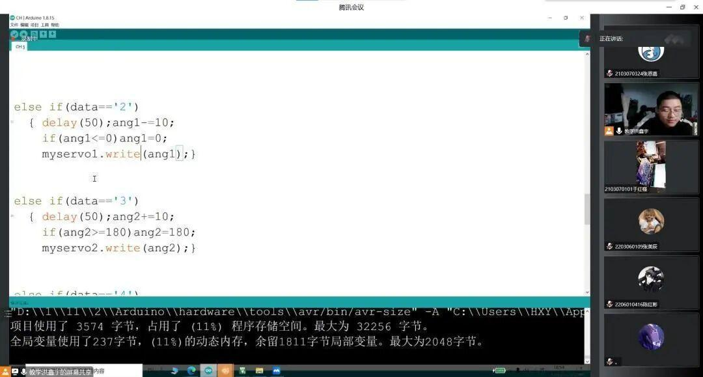
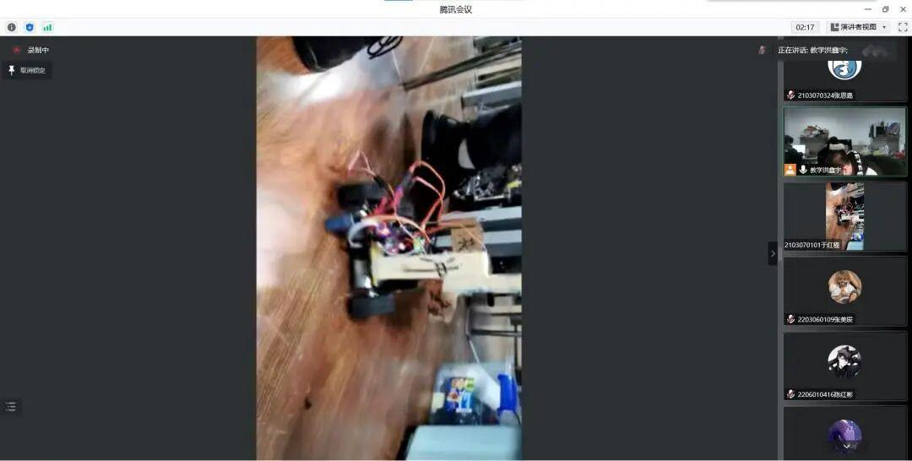
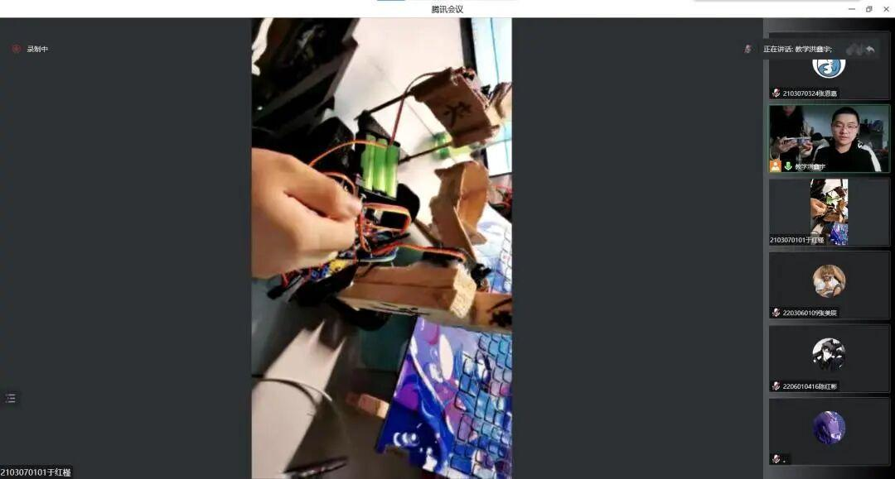
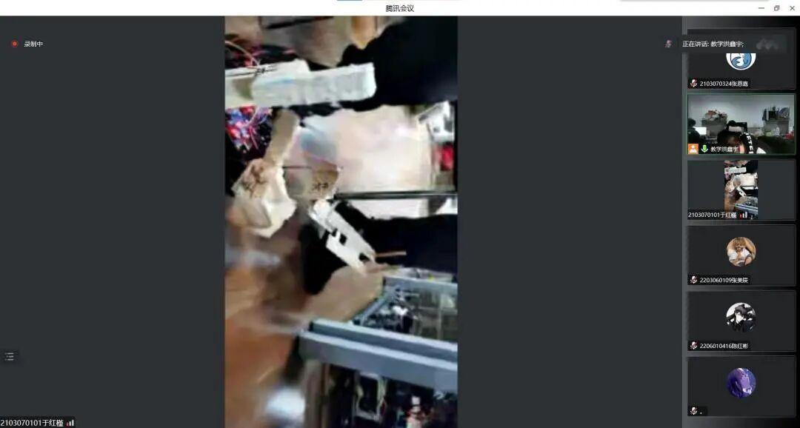
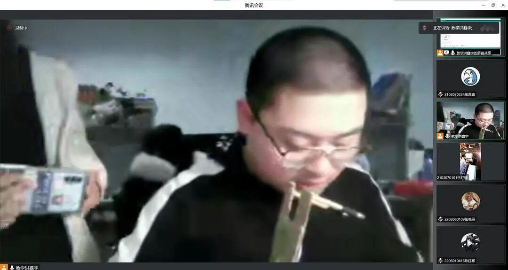

理工杯第二次教学

本次理工杯第二次教学的任务是教零基础参赛的同学在对小车的组成有一定雏形时，通过PPT、视频和答疑的方式教同学们对蓝牙小车进一步的掌握。


LIGHT SNOW TODAY
蓝牙小车使用舵机等零件，能否使得小车达到夹取和投放小球的能力，很大程度上取决于代码写得是否准确，为了让同学们尽快上手对比赛的小车调试，洪鑫宇学长在这里对舵机的基础语法进行了深入讲解。




实际通过代码运行舵机时，使用纸板等物品容易造成误差，为了解决同学们对夹取和投放的模型设计的问题，由于红瑾学姐进行了实际的操作和演示，同时让参赛同学有了一个参考。
在学长和学姐的讲解与演示中，同学们积极提出疑问并询问在制作小车过程中的相关难题，洪鑫宇学长针对这些问题也是做了充足的准备并进行了详细的解答。


END
排版|胖胖
文案|胖胖
图片|沈理电协
审核|恩嘉